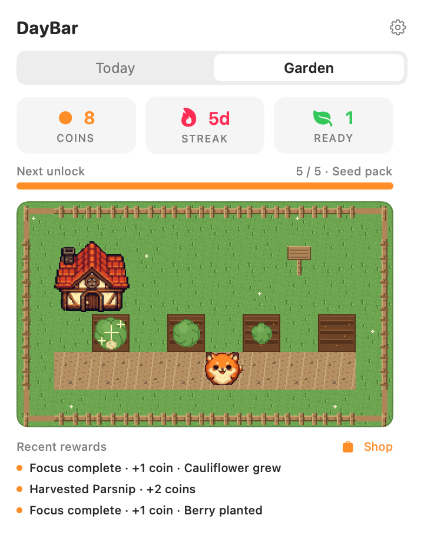

Gentle carry-over
Unfinished tasks roll into tomorrow and age quietly — grey to amber, plus a calm menu-bar count. Never a wall of red.

DayBar
A calm macOS menu-bar app for habits, todos, and Pomodoro — every session you finish tends a cozy focus garden. Soft wilt, not guilt.

DayBar-vX.Y.Z-macOS.zip
from
Releases.
Remove the quarantine flag, then open the app:
xattr -cr /Applications/DayBar.app
open /Applications/DayBar.appLook for the icon in the menu bar — there is no Dock icon.
Unfinished tasks roll into tomorrow and age quietly — grey to amber, plus a calm menu-bar count. Never a wall of red.
Every finished Pomodoro tends a top-down farm on its own Garden tab — plots grow crops, a companion cheers you on, soft wilt fades misses, and one grace day keeps the streak kind. Harvest and plant automatically, or switch to manual and do it yourself.
Ask “Did you finish what you planned?” — triage what’s left, jot a one-line reflection, and optionally tag your mood.

Your plan stays on your Mac with SwiftData — no account, no cloud sync of your tasks. Optional mood suggestions use on-device Apple Intelligence when available; nothing leaves the machine.